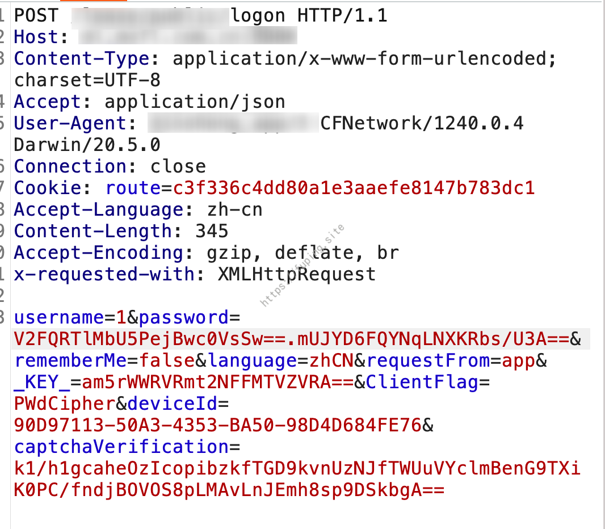
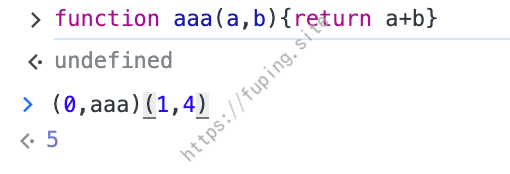
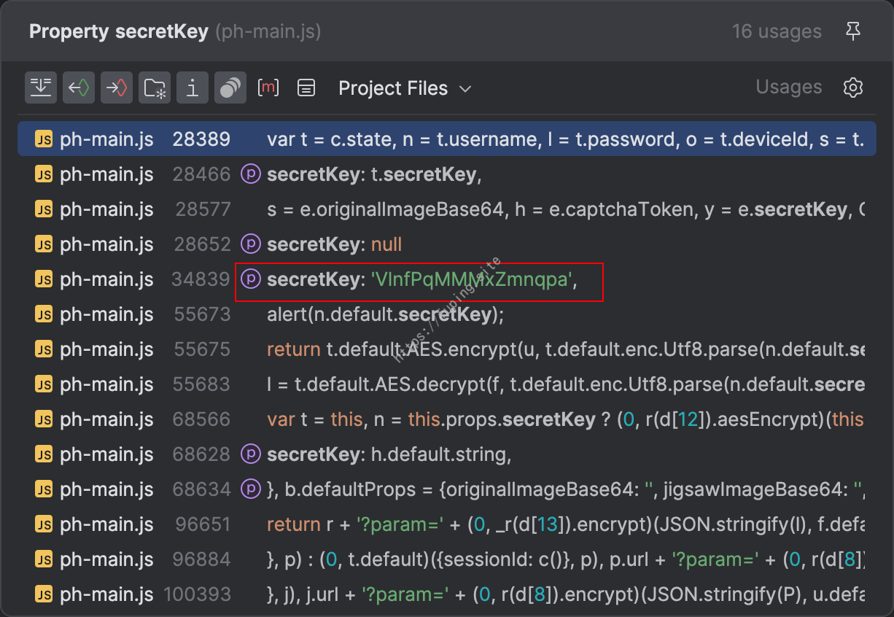
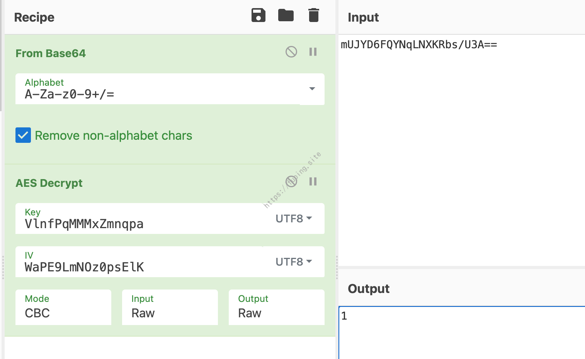
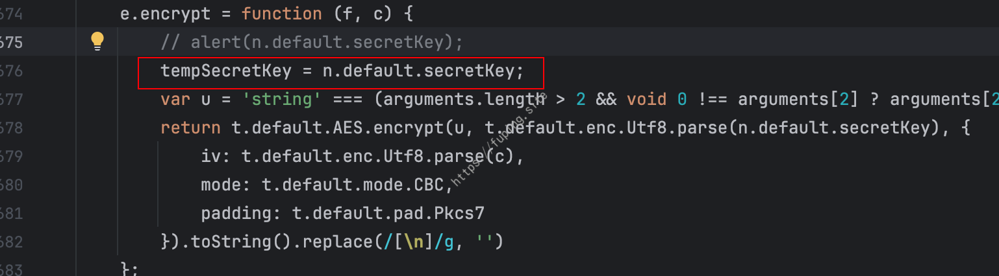

ios_reverse_reactnative_case
0x00 前言
一个用React Native构建的IOS应用案例，需要获取密码的加密算法。
0x01 过程
登录抓包，发现密码被加密

然后对APP进行砸壳
发现了文件main.jsbundle，这个通常是由 React Native框架生成的。React Native是一个流行的跨平台移动应用开发框架，它允许开发者使用JavaScript 和 React 来构建应用。
使用 React Native 打包的应用，应用的一部分或全部界面和逻辑是用 JavaScript 实现的，而JavaScript 代码和资源会被打包成 main.jsbundle 文件。所以我们可以分析main.jsbundle 文件，将其重命名为js后缀，然后打开并格式化。
这里要寻找密码的加密方式，所以搜索password:，经过筛选后定位到下图代码
主要代码
1 | var e = c.state, t = e.username, n = e.password, l = e.deviceId, o = (0, r(d[21]).uuid)(16), |
password的话由两部分组成，然后用”.”拼接了起来。
js中(0,函数名)(参数)就相当于函数的调用，如

所以password这里可以看作为
1 | r(d[23]).btoa(o) + "." + r(d[24]).encrypt(n, o) |
o是由(0, r(d[21]).uuid)(16)获取的，uuid 通常是一个用于生成唯一标识符（UUID）的函数。在这里可能是用来生成一个特定长度为16位的UUID。btoa 是一个内置的 JavaScript 函数，通常用于Base64 编码。在这里，r(d[23]).btoa可能是对 btoa 函数的引用。因此判断前半部分的话应该是对o进行了base64编码。
根据抓包的结果，password前半部分为V2FQRTlMbU5PejBwc0VsSw==，对其进行base64解码，结果为WaPE9LmNOz0psElK，刚好是16位长度。这里的o对应的内容为WaPE9LmNOz0psElK 。
后半部分采用了encrypt加密，有2个参数n和o，n为输入的密码（测试的时候输入的是1），当前情况下o为WaPE9LmNOz0psElK 。
我们搜索encrypt = function \(\w+, \w+\)
只有一个结果
采用了AES-CBC加密，参数f为输入的密码，c为16位的随机数（当前情况下c为WaPE9LmNOz0psElK）
接下来就是确定n.default.secretKey的值了。这个应用比较简单，直接查找使用就能找到值。

成功解密。

这是比较顺利的情况，可以直接找到secretKey。如果无法直接找到的话，可以通过插桩的方法来输出secretKey的值。将修改后的文件与main.jsbundle替换，然后重新打包ipa文件，也可以通过直接ssh连接到手机，直接替换main.jsbundle。第一种方法比较麻烦一点，一般都采用第二种。
ssh连接手机，执行命令find / -name "main.jsbundle"来搜索main.jsbundle文件。
红框中打码的内容为xxxx_app，与ipa解压payload中的一样，所以是这个。
然后通过scp将本地修改好的文件上传到手机上，替换main.jsbundle，重新运行app即可。
插桩的方法也有多种，如可以使用console.log或者alert输出。
运行效果
也可以设置一个全局变量（tempSecretKey），然后将secretKey的值赋给全局变量，然后放在数据包请求中。

运行APP后，进行抓包
也是可以成功获取secretKey的。
0x02 总结
对于React Native打包的APP，主要是分析main.jsbundle文件。通过插桩的方式来辅助分析，修改后替换手机上的文件。另外使用 HBuilder 开发的项目，做法类似，主要是分析和替换app-service.js文件 。